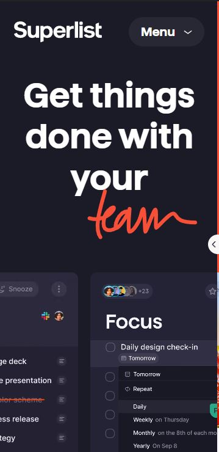
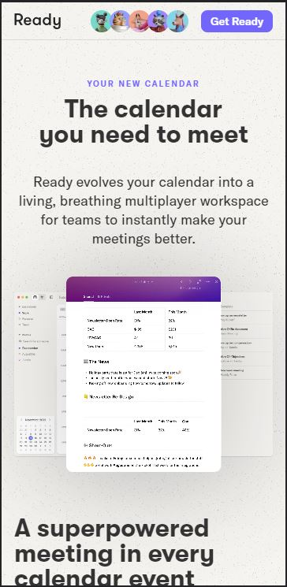

Visual Hierarchy
April ford website
www.aprilford.comThe April Ford website displays awesome Visual Hierarchy because the eye is drawn to the elements that are important by element scale and placement. It also creates a good Z motion with the eye when you star looking at the page your eye goes straight for the name of the website then your eye is drawn to the hamburger menu and then drawn down to the larger text on the page eventually landing on the get started button. As you scroll down the page the design continues to show other design elements as well but I liked the Visual Hierarchy for this page.
Rule of Thirds
Superlist website
www.superlist.com The Superlist website has a lot of really good design elements but the Rule of Thirds come to mind the most when you look at it at first. The largest thing on the page is the get things done with your team slogan and a sliding gallery of app screens most likely showing the app at work. Then you have the name of the website and the menu. Each of them taking up a third of the space.
Alignment
Ready website
www.aprilford.com The Ready website has meny different design elements at play but the one that really stands out the most is alignment. At the top of the page you have the name, links to contact info for employees, and a get ready button. All these elements are the same size and aligned the same. Then you have the main content of the page and it is aligned center with the pictures showing a vary centered alignment as well. Further down the page though the less importent content is left aligned helping with Hierarchy as well.